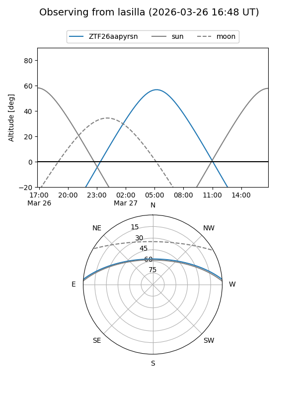
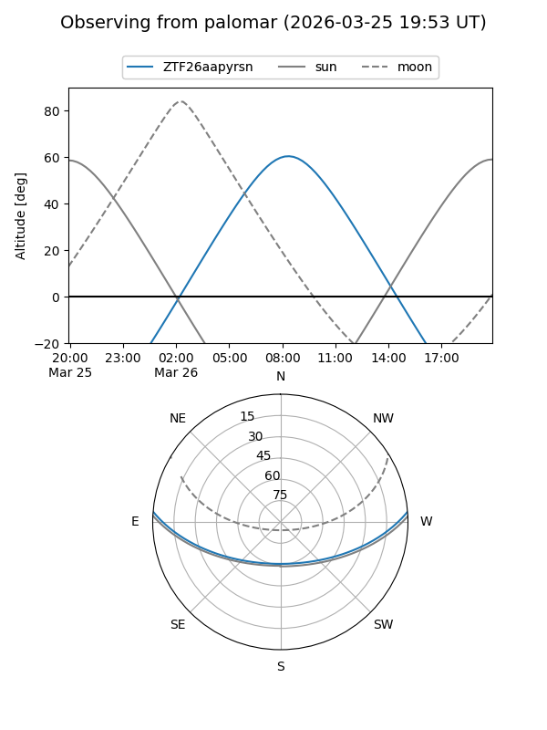

ZTF26aapyrsn
Target ZTF26aapyrsn at 2026-03-26 09:35
Aliases and brokers:
FINK: link
Lasair: link
ALeRCE: link
alt names
ZTF26aapyrsn (ztf,fink_ztf)
Coordinates:
equatorial (ra, dec) = 191.7162,+3.97103
equatorial (HMS+DMS) = 12:46:51.90,+03:58:15.69
galactic (l, b) = (300.0338,+66.81704)
Flags:
Photometry:
last ztfg=20.04
1 ztfg detections
Lightcurve
Visibility


Additional plots